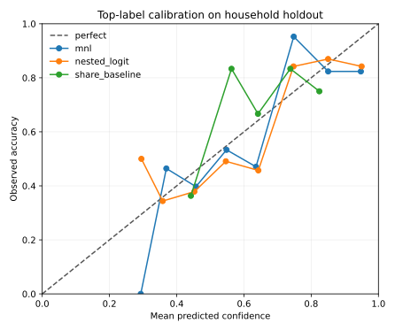

420世帯の公開合成フィクスチャで、推定から検証までの全工程を再現。
A public synthetic fixture of 420 households reproduces the full estimation-to-validation workflow.
公開ケーススタディPublic case study
利用可能選択肢と世帯グループを明示し、MNLとネスティッドロジットを漏洩なく比較する選択モデル事例。
A leakage-aware mode-choice case study comparing MNL and nested logit with explicit availability and household grouping.
技術スタック / Tech Stack
00

01
420世帯の公開合成フィクスチャで、推定から検証までの全工程を再現。
A public synthetic fixture of 420 households reproduces the full estimation-to-validation workflow.
観測された選択が利用不可なら即時失敗させ、選択集合の不整合を黙認しない。
Hard-fails when an observed choice is unavailable instead of silently accepting an inconsistent choice set.
精度と真クラス平均確率を区別し、世帯単位の分割とクラスタブートストラップを採用。
Distinguishes accuracy from mean true-class probability and uses household grouping plus cluster bootstrap.
02
交通手段選択で、利用可能性違反と同一世帯のリークを防ぎつつモデルを比較する。
Compare travel-mode models while preventing availability violations and same-household leakage.
代替固有効用を持つMNLとネスティッドロジットを最尤推定し、利用可能性を監査する。
Estimate MNL and nested-logit models by maximum likelihood with explicit availability auditing.
世帯単位ホールドアウト、予測確率、クラスタブートストラップで汎化と不確実性を評価する。
Assess generalization and uncertainty with household holdout, predictive probabilities, and cluster bootstrap.
合成データ上で、選択集合の整合性から外部評価まで監査可能なワークフローを構築。
Built an auditable synthetic workflow from choice-set integrity through out-of-sample evaluation.
03
係数は観察的関連であり、元の個票データの公開権限も未解決なため、実データ結果は公開しない。
Coefficients are observational associations, and rights to the original microdata are unresolved, so real-data results are not published.
04
公開ケーススタディPublic case study
公開図表はCC0の合成フィクスチャのみを使用。元の個票データ、実データ指標、私有結果は公開しない。
Public figures use only the CC0 synthetic fixture. Original microdata, real-data metrics, and private results are not published.